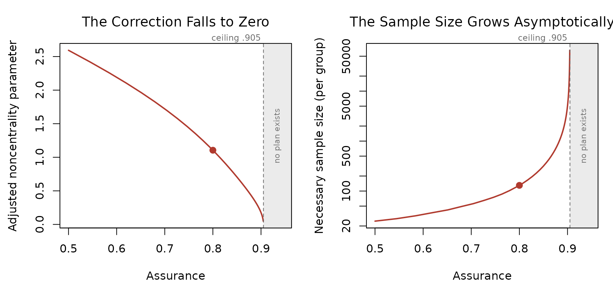
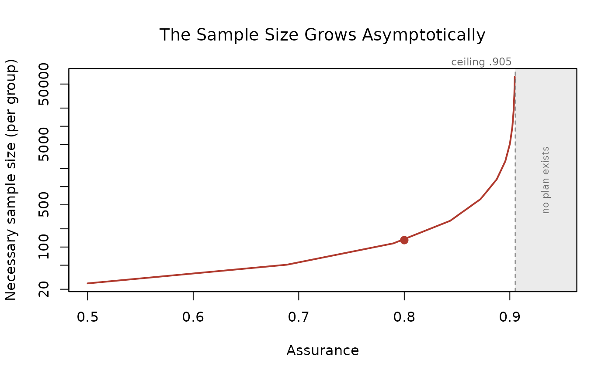

Assurance and the Publication Bias Correction
Ken Kelley, Samantha F. Anderson, and Scott E. Maxwell
Source:vignettes/understanding-assurance.Rmd
understanding-assurance.RmdTwo settings control how aggressively BUCSS corrects the prior
study’s effect: assurance handles uncertainty, and
alpha_prior handles publication bias. This vignette
explains what each one does and shows how the recommended sample size
responds as you turn each knob. The correction is described by Anderson,
Kelley, and Maxwell (2017) and builds on the truncated noncentral
distribution of Taylor and Muller (1996).
Assurance: Correcting for Uncertainty
Assurance is the long-run proportion of replications whose realized
power meets or exceeds the target. If you plan for 80% power with
assurance = .80, then in about 80% of replications the
realized power will be at least 80%.
-
assurance = .5selects the median of the likelihood. This corrects for publication bias only; it does not add any cushion for uncertainty. -
assurance > .5selects a lower quantile of the likelihood, which is a smaller, more conservative noncentrality parameter, and therefore a larger planned sample size. The extra sample size is the price of protecting against the chance that the prior estimate was lucky. -
assurance < .5is not recommended (the functions warn), because it implies under a 50% chance of reaching the desired power.
Why does uncertainty call for a larger sample at all? Suppose for a moment there were no publication bias, so the reported effect were equally likely to fall above or below the true value. The two kinds of error do not cancel, because the sample size needed for a given level of power is a nonlinear function of the effect size. An overestimate leads you to plan too small a study and cuts power sharply, while an equally sized underestimate leads you to plan a larger study and raises power by less. Averaged over the ways a noisy estimate can come out, planning at face value loses more power than it gains, so protecting against uncertainty means shifting the plan toward a larger sample. That is exactly what assurance above .5 does.
Watch the recommended per-group sample size climb as assurance rises, for a prior independent t test with t = 3.00 and 20 per group:
assurances <- c(.5, .6, .7, .8, .9)
n_by_assurance <- sapply(assurances, function(a) {
r <- ss_buc_independent_t(t_observed = 3, n = 20, assurance = a, desired_power = .80)
r$value[r$term == "necessary_n_per_group"]
})
data.frame(assurance = assurances, necessary_n_per_group = n_by_assurance)
#> assurance necessary_n_per_group
#> 1 0.5 25
#> 2 0.6 34
#> 3 0.7 55
#> 4 0.8 130
#> 5 0.9 5042The climb is steep. A prior effect this uncertain calls for 130 per group at 80% assurance and over 5000 per group at 90%.
When the Correction Cannot Be Made
Push assurance high enough on a weak or uncertain prior effect and the corrected noncentrality parameter is driven to zero. That is the method telling you the prior effect cannot be estimated with confidence at this level of assurance, so sample size planning is not possible with these settings. The function stops rather than returning a meaningless answer, and the error reports the largest assurance the prior result can support so you know exactly how far to step back:
# Not run: this stops with an informative error.
ss_buc_independent_t(t_observed = 3, n = 20, assurance = .95, desired_power = .80)
#> Error: Sample size planning is not possible with these settings. After
#> correcting the prior study's effect for publication bias and uncertainty
#> at the requested level of assurance, the corrected noncentrality
#> parameter is zero, which means there is not enough information in the
#> prior result to plan the sample size as desired. With this prior result
#> and 'alpha_prior', the largest 'assurance' that still yields a usable
#> plan is about .90; re-run with 'assurance' at or below that value, or
#> raise 'alpha_prior' to lift the ceiling. Re-running at a lower
#> 'assurance' is not free: the plan it returns carries that lower
#> assurance, not the one you first asked for, so the long run proportion
#> of replications reaching your target power falls accordingly.
#> 'alpha_prior' does not change
#> the prior study, which is what it is; it is your assumption about the
#> publication threshold the study's literature faced, so raising it toward
#> 1 assumes less publication bias to undo (for example, 'alpha_prior = .10'
#> assumes the literature's journals would have published a result
#> significant at the .10 level, a more lenient policy than .05, and
#> 'alpha_prior = 1' assumes no publication bias at all). See Anderson,
#> Kelley, and Maxwell (2017) and Anderson and Kelley (2024).That last sentence is worth dwelling on, because the first remedy
looks cheaper than it is. Assurance is a promise about the long run: at
.90, nine replications in ten reach your target power. If the prior
result cannot support .90 and you re-run at .80, the plan you get is a
perfectly good .80 plan, but it is an .80 plan. You have not recovered
the guarantee you wanted; you have accepted a smaller one in exchange
for a feasible study. Raising alpha_prior is a different
kind of move: it does not lower the guarantee, it changes an assumption
about the literature the prior study came from, and it is defensible
exactly to the extent that the assumption is.
The reported ceiling is exact: the largest assurance a prior result
can support is 1 - p/alpha_prior, where p is the
prior study’s p value. Here that is about .90, so .95 is out of
reach but .90 or below is fine. The two remedies are exactly the two
knobs: lower the assurance to at or below the reported ceiling, or
assume less publication bias by raising alpha_prior, which
lifts the ceiling. When the ceiling is already at or below the .5 floor,
only raising alpha_prior can help.
Every successful call reports this same ceiling too, printed in the footer as “Largest supportable assurance”, so you can see how much headroom remains before the correction breaks down. The printed result also gives the implied total sample size for per-group and per-cell designs, saving you the multiplication.
The Ceiling, Drawn
The ceiling is easier to see than to read about, so
plot() on any plan draws it. The method re-runs that plan’s
own planner across a range of assurance values and shows what happens on
the way to the wall.
plan <- ss_buc_independent_t(t_observed = 3, n = 20, assurance = .80)
plot(plan)
The point is the shape. Assurance does not degrade gracefully as it
rises: it hits a wall. On the left, the corrected noncentrality
parameter, the quantity the correction actually solves for, falls to
zero. On the right, the sample size that parameter implies grows
asymptotically, and the vertical scale is logarithmic because it spans
three orders of magnitude over a range of assurance a researcher might
plausibly consider. The filled point is the plan itself, at
assurance = .80, and the shaded band is the region where
the planner refuses.
That the sample size is finite everywhere left of the ceiling and undefined everywhere right of it is not an artifact of the software. It is what the prior result can and cannot support.
Read from the same figure, the two remedies in the error message are
the two things you can do to a wall. Lowering assurance moves the point
left, along a curve that is very steep near the ceiling, which is why a
small step back can buy a large reduction in sample size. Raising
alpha_prior moves the wall itself to the right.
The plotted values come back invisibly, so the figure can be redrawn with any other graphics system:
curve_values <- plot(plan, which = "size", n_points = 12)
head(curve_values, 4)
#> assurance ncp_adjusted sample_size actual_power
#> 1 0.5000000 2.5934021 25 0.8108657
#> 2 0.6888979 1.7779261 51 0.8028359
#> 3 0.7897070 1.1784254 115 0.8034150
#> 4 0.8435058 0.7620142 272 0.8010077alpha_prior: Modeling Publication Bias
alpha_prior is the significance threshold that governs
publication in the prior study’s literature. Setting
alpha_prior = .05 assumes the field publishes results with
p < .05 and truncates the likelihood at that point. A larger
value assumes a more permissive literature and therefore less severe
bias; alpha_prior = 1 assumes no publication bias at all,
which is appropriate for a prior study that was never subject to the
file drawer, such as a pilot study.
A dissertation study is a similar case, since it is typically
completed and defended regardless of how the results turn out. Even a
pilot study is not guaranteed to be bias-free, though. If the
researchers would have gone on to the full study only after a promising
pilot result, say p < .25, then the pilot faced an informal
filter of its own, and an alpha_prior between .05 and 1 may
describe it better than either extreme. An intermediate value above .05
also suits a prior effect that was not the original study’s focus, such
as a secondary effect reported alongside a study’s main result, which
usually faced a weaker publication filter than the headline effect
did.
Note that alpha_prior is not a confidence level and is
distinct from alpha_planned, which is the Type I error rate
of the study you are designing.
Holding assurance at .80, watch the recommended sample size shrink as we assume less publication bias:
alphas <- c(.05, .10, .20, .50, 1)
n_by_alpha <- sapply(alphas, function(ap) {
r <- ss_buc_independent_t(t_observed = 3, n = 20, alpha_prior = ap, assurance = .80,
desired_power = .80)
r$value[r$term == "necessary_n_per_group"]
})
data.frame(alpha_prior = alphas, necessary_n_per_group = n_by_alpha)
#> alpha_prior necessary_n_per_group
#> 1 0.05 130
#> 2 0.10 64
#> 3 0.20 48
#> 4 0.50 40
#> 5 1.00 37Assuming the strongest bias (alpha_prior = .05) calls
for 130 per group; assuming none (alpha_prior = 1) calls
for 37.
Seeing the Assurance Claim Exercised
Everything above is a claim about a long run that a user planning one
study never gets to watch. ss_buc_sensitivity() lets you
watch it on your own numbers. It reads the design and the planning
inputs off a plan, simulates prior studies of that design from a true
effect you name, discards the ones a literature would not have
published, runs the same planner on each survivor, and reports what
happened.
You have to name the true effect; there is deliberately no default,
because defaulting to the corrected estimate would ask the method to
grade its own answer. The value goes on the same scale as the plan’s own
ncp_adjusted, so that number is the natural anchor.
plan <- ss_buc_paired_t(t_observed = 3, N = 30, assurance = .80)
plan$value[plan$term == "ncp_adjusted"]
#> [1] 0.9753901
ss_buc_sensitivity(plan, true_ncp = 2, replications = 2000, seed = 2017)
#> term value
#> true_ncp 2
#> ncp_adjusted 0.975
#> replications 2000
#> publication_rate 0.49
#> refusal_rate 0.508
#> attainment 0.604
#> attainment_mcse 0.0156
#> attainment_with_refusals 0.806
#> size_at_true_effect 61
#> size_q25 40
#> size_median 85
#> size_q75 280
#>
#> Design: Dependent (paired) t test
#> Sample size unit: number of pairs
#> Requested assurance: .80
#> Target power: .80Two attainment rates are reported, and the gap between them is the
point. attainment_with_refusals lands on the requested
assurance, because that is the quantity the guarantee is about: a
refusal counts as attaining, since declining to plan is the limiting
case of an arbitrarily conservative plan. attainment counts
only the prior studies for which a plan was actually issued, and it is
lower, often much lower. That is what a user experiences, and it is the
visible price of a method that refuses rather than guesses. Its expected
value is (assurance - refusal_rate)/(1 - refusal_rate).
The most useful thing to do with this function is to run it more than once, at the corrected estimate and at values below it, and watch how fast the attainment falls when the truth is smaller than the correction assumed. What it cannot tell you is whether the distributional assumption behind a design is right, since the simulation shares that assumption.
Practical Guidance
- Make the corrections as minimal as you can defend. Each knob trades a modeling assumption for a smaller sample, and overstating either bias or uncertainty inflates the study unnecessarily.
-
assurance = .80is a common, defensible choice. Reserve very high assurance for cases where a failed replication is especially costly, and expect the required sample size to grow quickly. - Choose
alpha_priorto reflect the publishing threshold in the prior study’s field. Usealpha_prior = 1only when you genuinely believe the prior study escaped publication bias.
References
Anderson, S. F., & Kelley, K. (2024). Sample size planning for replication studies: The devil is in the design. Psychological Methods, 29, 844–867. https://doi.org/10.1037/met0000520
Anderson, S. F., Kelley, K., & Maxwell, S. E. (2017). Sample-size planning for more accurate statistical power: A method adjusting sample effect sizes for publication bias and uncertainty. Psychological Science, 28, 1547–1562. https://doi.org/10.1177/0956797617723724
Taylor, D. J., & Muller, K. E. (1996). Bias in linear model power and sample size calculation due to estimating noncentrality. Communications in Statistics: Theory and Methods, 25, 1595–1610.